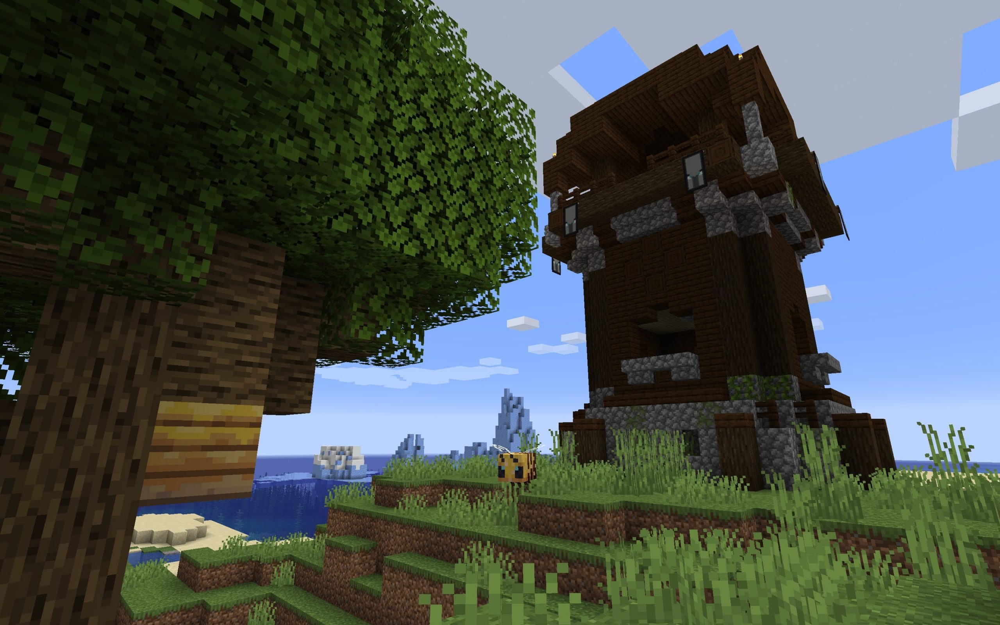
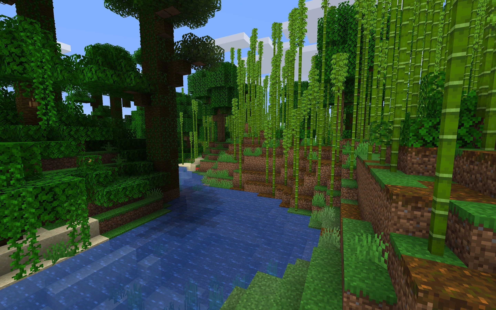
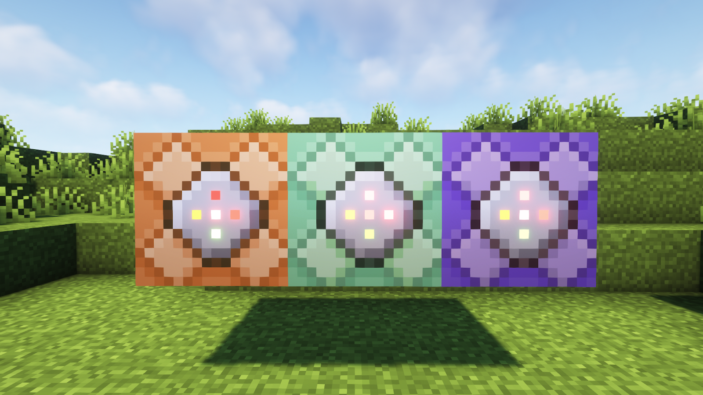
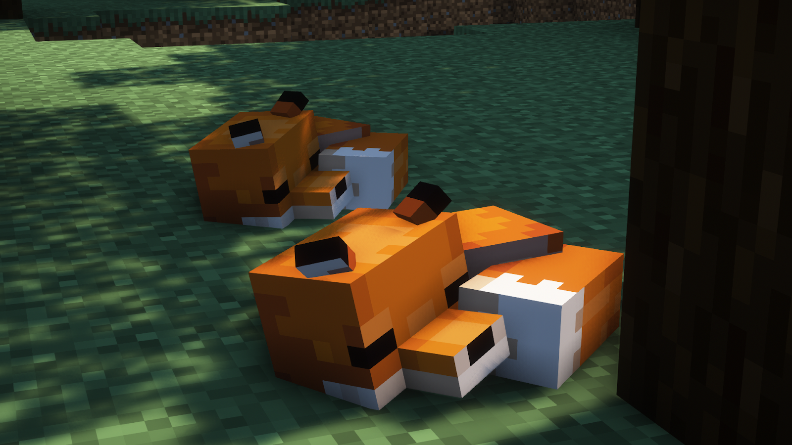
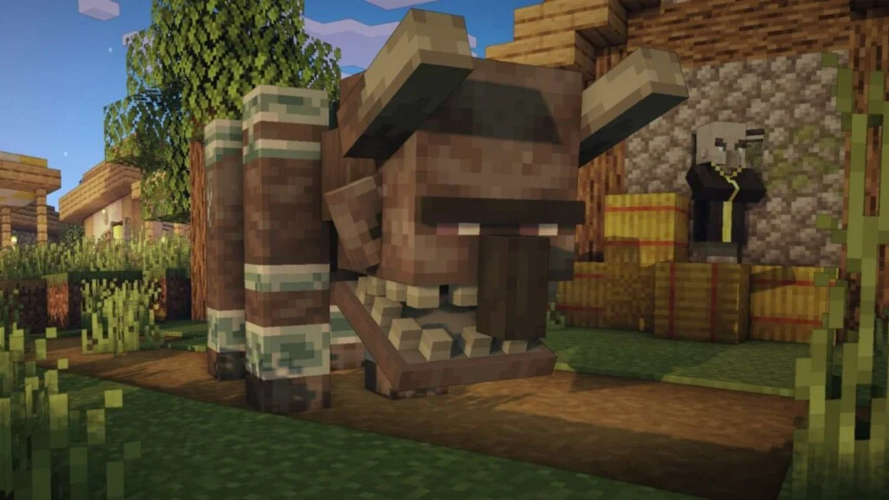
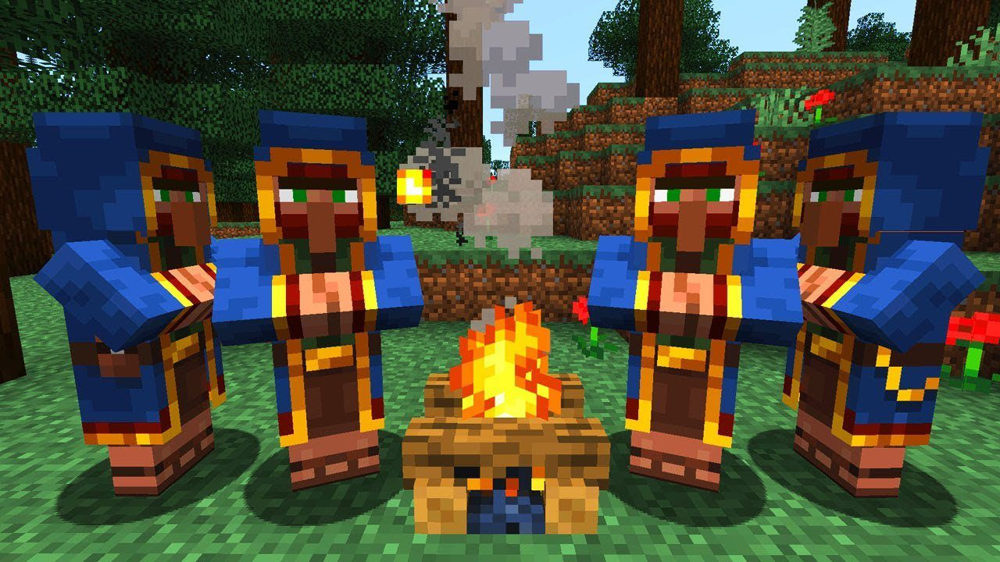
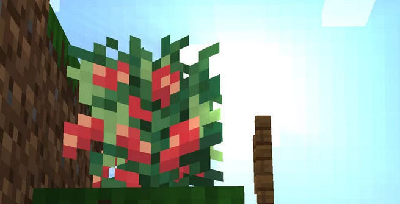

The 1.14 minecraft version entered the game on April 22, 2019
The update introduces a lot of content to the game, including:
Villagers and Villager Professions
They now have distinct professions, which determine their appearance and the trades they offer. Villager professions include farmers, librarians, blacksmiths, and more. Each profession specializes in certain trades, such as buying and selling specific items or providing enchanted books. Players can interact with villagers to initiate trades, using emeralds as the primary currency. Villagers also play a crucial role in village life, as they can restock their trades and breed to increase the village population. Trading with villagers offers a valuable source of resources and items, making them essential allies in your Minecraft adventures.
Pillager Outpost structure
It is a base for the hostile mob group known as pillagers. These outposts can be found in various biomes and are recognizable by their tall watchtower and fenced-in area. Pillagers are hostile towards players and will attack on sight, making the outposts challenging and dangerous to approach. However, conquering these outposts can yield valuable loot, including emeralds, crossbows, and banners. Pillager Outposts also play a role in the game's new raid mechanic, where players must defend villages from waves of pillagers and their powerful leaders, the pillager captains. Successfully defeating the pillagers and completing a raid rewards players with rare items and the Hero of the Village status effect, providing various benefits.

Bamboo biome
It is characterized by its dense growth of tall bamboo stalks, creating a lush and exotic environment. The bamboo can be harvested and used as a versatile resource, suitable for building, crafting, and fuel. The biome is also home to pandas, adorable and passive mobs that add charm to the surroundings. Exploring the Bamboo Jungle provides an opportunity to gather bamboo, encounter pandas, and discover hidden treasures within the dense foliage. It is a fascinating biome that offers a distinct atmosphere and exciting possibilities for players to immerse themselves in the world of Minecraft.

New blocks
Campfire: The campfire is a versatile block that provides light and warmth, making it perfect for creating cozy outdoor areas. It can be used for cooking food, smelting items, and as a decorative element to enhance your Minecraft world.
Lectern: The lectern is a block that allows players to display and read written books. It is a fantastic addition for creating interactive stories, sharing knowledge, or organizing information in a visually appealing way.
Blast Furnace: The blast furnace is an advanced version of the furnace, designed specifically for smelting ores and speeding up the smelting process. It is an invaluable tool for efficient resource processing and provides a significant boost to your industrial capabilities.
Bamboo: Bamboo is a fast-growing plant that can be found in the new Bamboo Jungle biome. It can be harvested and used for building, crafting, or as a fuel source. Its flexibility and versatility make it a valuable addition to your arsenal of building materials.
These new blocks introduce exciting gameplay mechanics, enhance aesthetics, and provide new possibilities for creative building and resource management in the world of Minecraft.

Commands changes
These changes included new command functionalities, syntax updates, and additional parameters, allowing for more precise control over the game world. The command system enhancements introduced greater flexibility and ease of use, empowering players and map makers to create more intricate and dynamic experiences within their Minecraft worlds.

Crossbow item
The crossbow is a powerful ranged weapon introduced in Minecraft. It is crafted using a combination of sticks, strings, and various materials such as iron, gold, or even enchanted books. The crossbow allows players to deliver devastating projectile attacks from a distance, making it a formidable weapon against enemies. It can be loaded with various types of ammunition, including arrows and firework rockets, each with their own unique properties and effects. The crossbow offers versatility in combat, with the ability to charge shots for increased damage or use special enchantments to enhance its capabilities. It is a valuable addition to any adventurer's arsenal, providing a reliable and deadly ranged attack option.
Fox mob
Foxes are sly and agile mobs that can be found in taiga biomes in Minecraft. They are small, bushy-tailed animals known for their cunning behavior. Foxes have a unique AI that allows them to exhibit natural behaviors, such as hunting for food, leaping and pouncing on their prey, and even playing with each other. They are also known for their ability to pick up and carry certain items in their mouths, such as feathers or sweet berries. Players can interact with foxes by offering them sweet berries, which can lead to taming and befriending them. Tamed foxes will follow players and can be bred to create more fox companions. With their charming appearance and lively antics, foxes add a touch of wildlife realism and playful companionship to the Minecraft taiga biomes.

Pandas mob
Pandas are adorable and passive mobs that can be found in bamboo jungles in Minecraft. They are known for their distinctive black and white fur patterns and lovable appearance. Pandas have different personalities, including playful, lazy, aggressive, and weak, which determine their behaviors and interactions with the environment. They spend most of their time eating bamboo, which is their primary food source. Pandas can also roll, somersault, and interact with each other, showcasing their playful nature. Players can breed pandas using bamboo, which allows them to create new baby pandas with unique traits inherited from their parents. With their charming animations and varied personalities, pandas bring a delightful touch of wildlife to the bamboo jungles in Minecraft.

Ravager mob
Ravagers are large, hostile mobs that can be found during raids in Minecraft. They are powerful and intimidating creatures, resembling a cross between a bull and a bear. Ravagers have a strong attack, dealing significant damage to players and villagers, and they possess a large amount of health, making them formidable opponents. Their attacks can knock back and stun their targets, adding an extra layer of challenge to combat encounters. Ravagers are often led by Illager captains and can be found as part of the hostile pillager raids that occur in villages. Defeating a ravager rewards players with valuable loot, making them a worthwhile adversary to overcome. With their imposing size and strength, ravagers provide an exciting and intense combat experience in Minecraft.

Wandering Trader
The Wandering Trader is a neutral mob that spawns randomly in villages in Minecraft. It is characterized by its unique appearance, wearing a blue robe and a large backpack. The Wandering Trader offers a distinct gameplay element by providing players with an opportunity to trade for rare and exotic items. However, unlike regular villagers, the Wandering Trader has a limited selection of items available for trade, and its trades change periodically. The Wandering Trader can be interacted with by right-clicking on it, initiating a trade interface where players can exchange emeralds for various items, such as enchanted books, rare blocks, or even mob heads. While the Wandering Trader does not play a significant role in village life or progression, it offers a chance for players to acquire unique items and adds an element of unpredictability to exploration and trading in Minecraft.

Sweet Berries food
Berries are a type of food item introduced in Minecraft. They can be found growing on berry bushes, which can be naturally generated in various biomes, including taiga, snowy taiga, and taiga hills. Berries provide a convenient source of food for players, as they can be harvested directly from the bushes without the need for any tools. When consumed, berries restore a small amount of hunger and grant a brief saturation effect. However, players need to be cautious when eating berries, as they can also inflict a minor amount of damage due to their prickly nature. Berries can also be used as an ingredient in crafting recipes, such as making sweet berry bushes or using them in suspicious stew recipes. They add a touch of realism and foraging gameplay to the Minecraft world, encouraging players to explore and interact with the environment to gather resources for survival.
